class: center, middle # EE-464 STATIC POWER CONVERSION-II # Magnetic Design for Power Electronics ## Ozan Keysan ## [keysan.me](http://keysan.me) ### Office: C-113 <span class="meta">•</span> Tel: 210 7586 --- # Review of Magnetic Circuits -- - ### [Magnetic Materials](http://keysan.me/presentations/ee568_intro.html#190) - ### [EE564-Transformer Design](http://keysan.me/presentations/ee568_inductor_transformer_design.html) --- # Transformer Design ## References: - ### [Mohan, Design of Magnetic Components](https://www.dropbox.com/s/ata52e9jhk1jv8v/Ch30.pdf?dl=1) - ### [Erickson, Inductor Design](https://altor1.narod.ru/Books_Docs/Fundamentals_of_Power_Electronics.pdf), (Ch12 Slides) - ### [Erickson, Transformer Design](https://www.dropbox.com/s/vzxore2801nr8yo/Ch15slides.pdf?dl=1) - ### [Wurth Transformer Design](https://www.dropbox.com/s/s4odvveholh7efp/wurth-cookbook-transformer-design.pdf?dl=1) - ### [Hurley, Magnetic Design](https://www.dropbox.com/s/0oug98lp0116fwn/05_Hurley_Magnetics%20Design.pdf?dl=1) --- # Inductor Design -- - ## Magnetic Design: Calculating B, H, magnetic energy -- - ## Electrical Design: Choosing number of turns, copper size, wire type, current density -- - ## Parameter Estimation: Inductance, Leakage, Resistance -- - ## Thermal: Losses, Efficiency --- # Typical Core 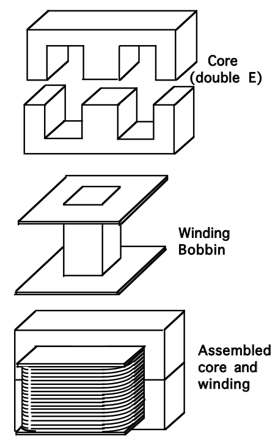 --- # Core Types - ## U, I Core - ## E Core - ## Toroid Core - ## Pot Core --- # Core Materials - ## Ferrites - ## Laminated Electrical Sheets - ## Kool Mu Powder - ## Metglass - ## Powdered Iron --- ## Core Bobbin 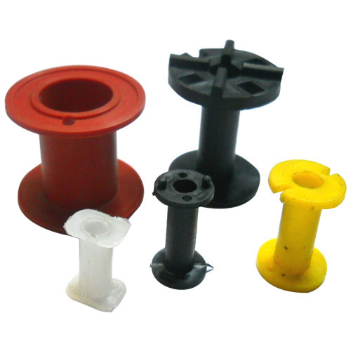 ### [Karkas Çeşitleri](http://www.kaptanplastik.com/urunler) ### [Coil Winding](https://www.youtube.com/watch?v=2ttzm1itctA), [toroidal winding](https://www.youtube.com/watch?v=82PpCzM2CUg) --- ## E-Core 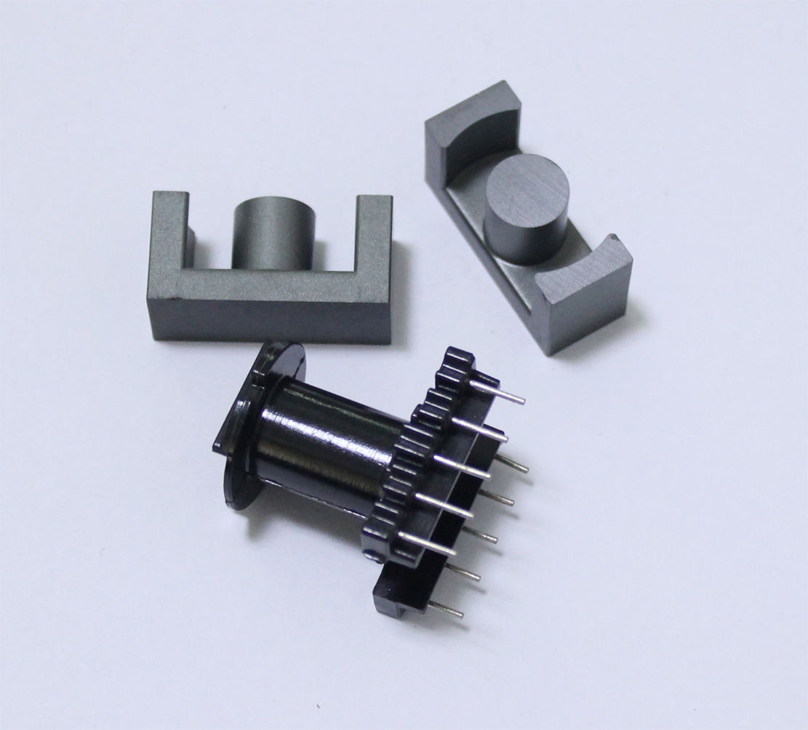 ### [Nüve Çeşitleri](https://www.direnc.net/feritler) --- ## Pot Core 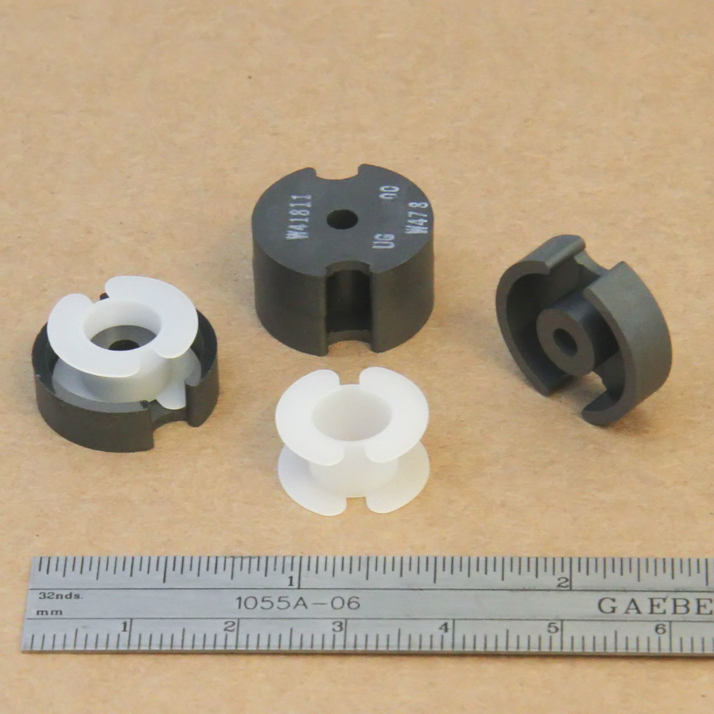 --- # Inductor Fundamentals ## Review of Magnetic Circuits - ### [EE361-Inductors](http://keysan.me/presentations/ee361_magnetic_energy.html) - ### [EE361-Practical Transformers](http://keysan.me/presentations/ee361_practical_transformers.html) - ### [Magnetic Materials](http://keysan.me/presentations/ee568_intro.html#190) - ### [EE564-Transformer Design](http://keysan.me/presentations/ee568_inductor_transformer_design.html) --- # Winding Design -- - ## Winding area, copper area -- - ## Fill Factor (\\(k_{cu}\\)) -- - ### \\(k_{cu} = 0.3\\) for Litz wire - ### \\(k_{cu} = 0.6\\) for round wire - ### \\(k_{cu} = 0.7-0.8\\) for rectangular wire --- # Core Loss 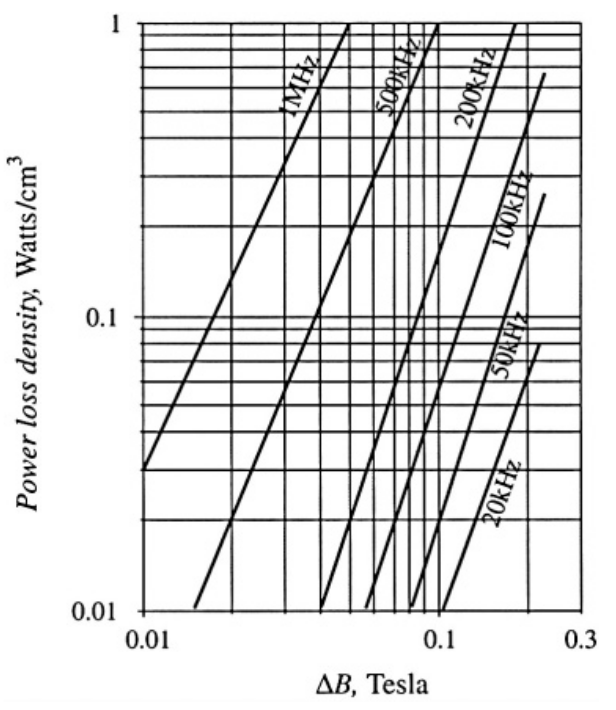 ### Typical core loss for a power ferrite --- # Core Loss ### Steinmetz's Equation -- # \\(P\_{fe} = K\_{fe} f^{\alpha} (\Delta B)^{\beta} A\_c l\_c\\) ### Usually the constants are given in the datasheet ### Alternatively core loss graphs can be available --- # Skin Effect ### For 100 C copper resistivity: -- ## \\(\delta = \dfrac{7.5}{\sqrt{f}}\\) cm --- # Skin Depth 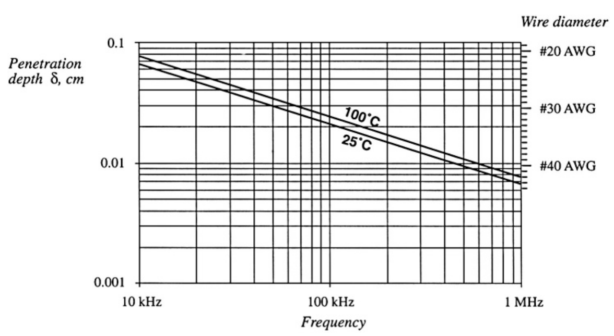 --- # Proximity Effect ### Current loss induced by adjacent coils -- 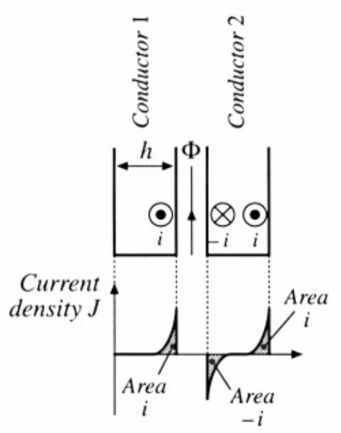 ### Coil-1 carries a high frequency current, Coil-2 open circuited. --- 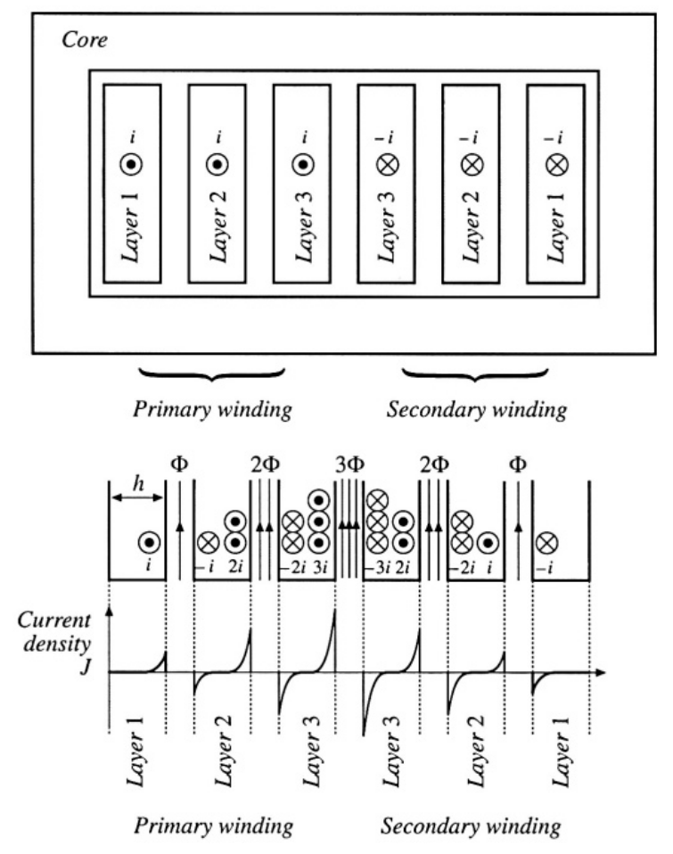 ### Increased copper loss --- # Leakage Flux -- 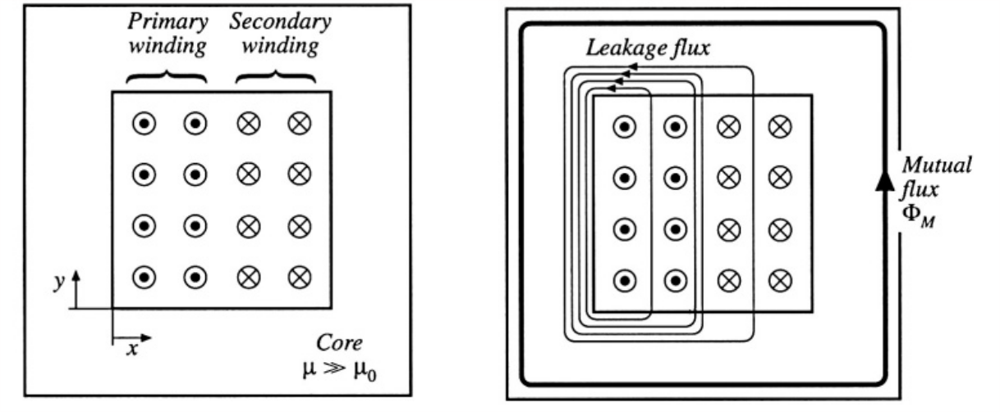 --- # Leakage Flux ## MMF Distribution 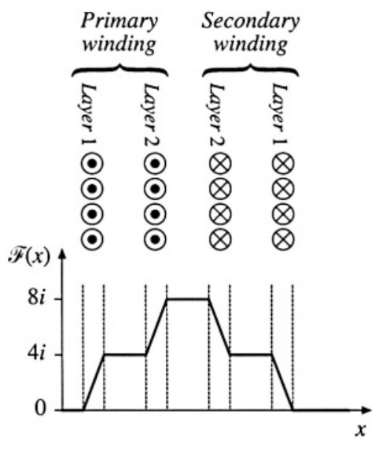 --- # Interleaving Windings -- ## Can help to reduce proximity effect and leakage 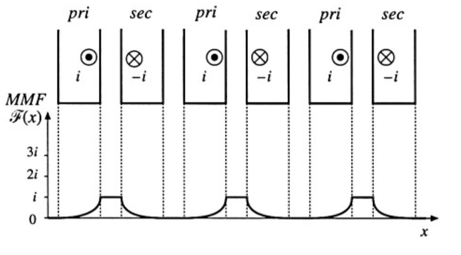 --- # Interleaving Windings -- ## Worst Case 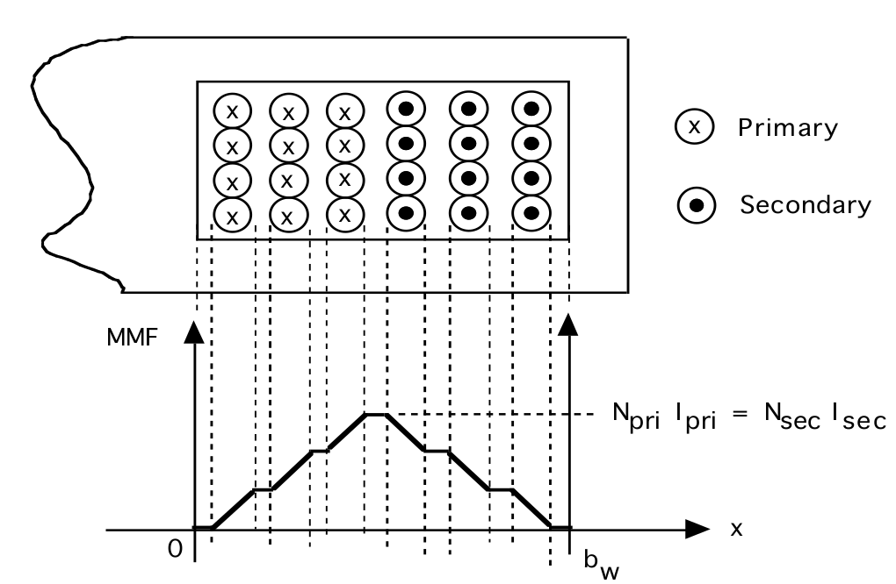 --- # Interleaving Windings -- ## Better Case 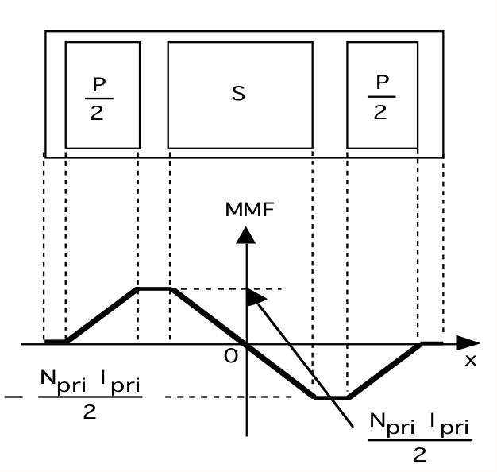 --- # Interleaving Windings -- ## Best Case 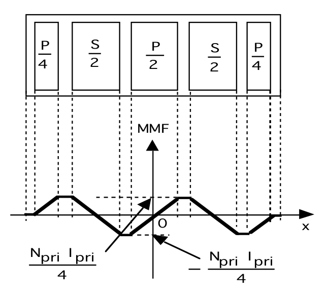 --- # How to use an RLC Meter? - ### [Hioki, IM3533](https://www.hioki.com/file/cmw/hdCatalog/4549/pdf/?action=browser&log=1&lang=en) - ### [Hioki how to use LCR meters?](https://www.youtube.com/@Hioki/search?query=lcr) --- # How to use an RLC Meter? ## [Equivalent Circuit Models](https://www.hioki.com/euro-en/learning/usage/lcr-meters_7.html) -- --- ## [Equivalent Circuit Models](https://www.hioki.com/en/products/listUse/?category=10 ) 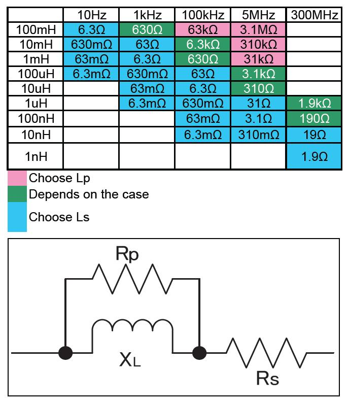 --- # How to use an RLC Meter? ## Primary and Secondary Inductance Measurement ### [Measure Primary Inductance with Osciloscope](https://www.youtube.com/watch?v=WiboSO5cJW4) 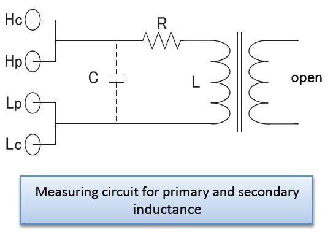 --- # How to use an RLC Meter? ## Leakage Inductance Measurement 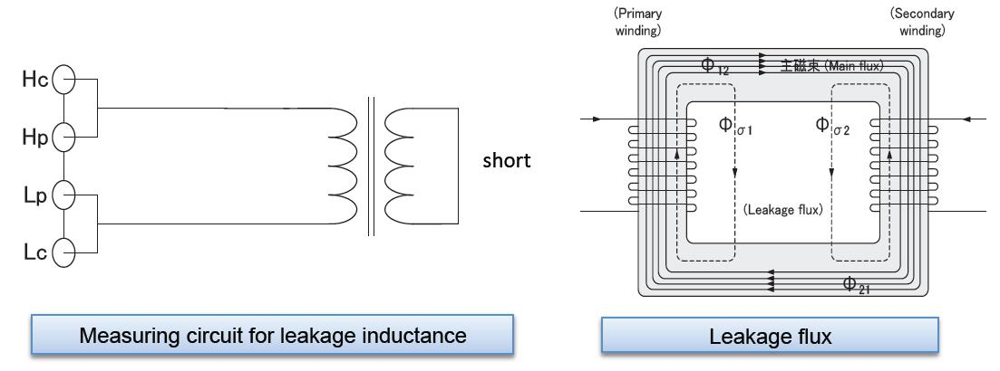 --- ### [Mutual Inductance Measurement](https://www.youtube.com/watch?v=P0-iGnAW7FM): \\(L_m = (L_a - L_o)/4\\) <img src="https://i.stack.imgur.com/CaQwP.png" alt="Drawing" style="width: 400px;"> --- ### [Mutual Inductance Measurement](https://www.youtube.com/watch?v=P0-iGnAW7FM): \\(L_m = (L_a - L_o)/4\\) 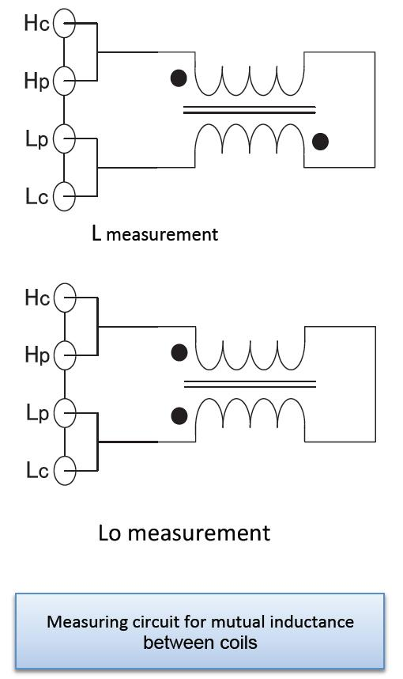 --- # How to use an RLC Meter? ## [Turns Ratio Measurement](https://www.youtube.com/watch?v=3giTLF-e_HA) --- # Application Notes: - ## [Coil Craft Application Notes](https://www.coilcraft.com/appnotes.cfm) - ## [Selecting the Best Inductor](https://www.coilcraft.com/pdfs/Doc469_selecting_inductors.pdf) - ## [Structured Design off Switching Power Transformers](https://www.coilcraft.com/pdfs/doc627_Power_transformer_design.pdf) --- # Application Notes: - ### [OnSemi-Transformer Design Consideration for Flyback](https://www.onsemi.com/pub/Collateral/AN-4140.pdf) - ### [Transformers and Inductors for Power Electronics: Theory, Design and Applications](https://onlinelibrary.wiley.com/doi/book/10.1002/9781118544648) - ### [Power Transformer Design](https://www.ti.com/lit/ml/slup126/slup126.pdf) - ### [Flyback Transformer Design](https://www.ti.com/lit/ml/slup127/slup127.pdf ) - ### [Fuji, Flyback Transformer Design](https://www.fujielectric.com/products/semiconductor/model/power_supply/technical/box/pdf/Fly-Back_transformer_Design_Rev_1_0_E.pdf) --- ## You can download this presentation from: [keysan.me/ee464](http://keysan.me/ee464)